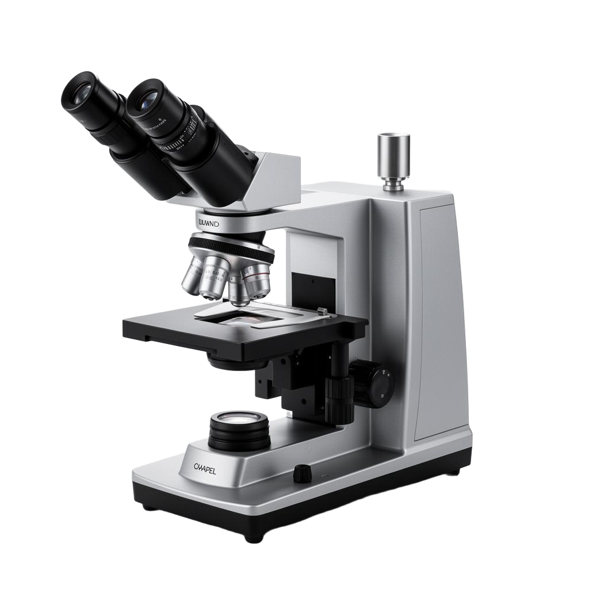
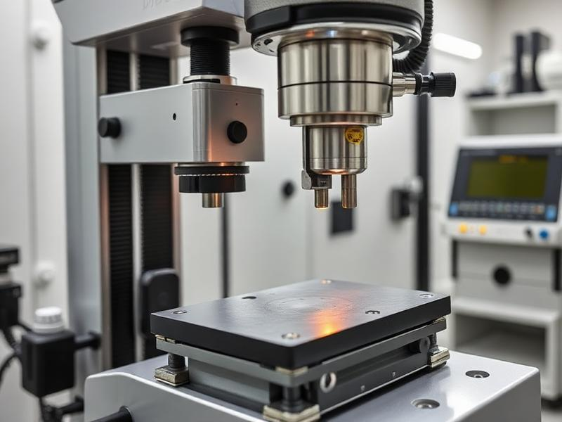
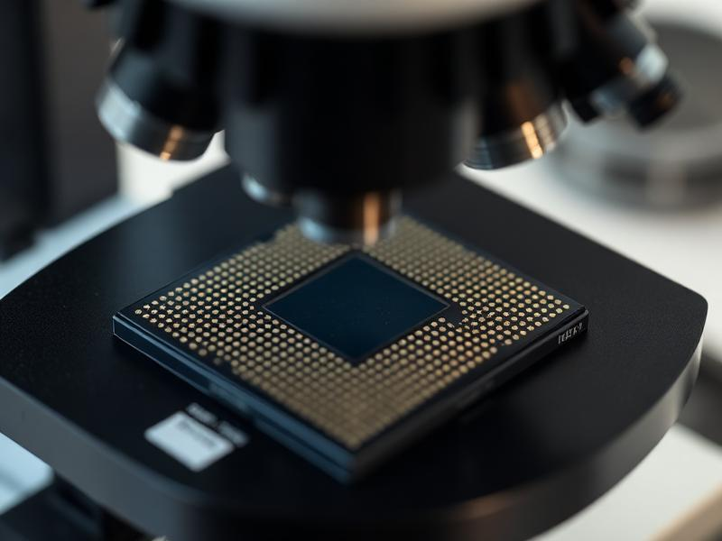
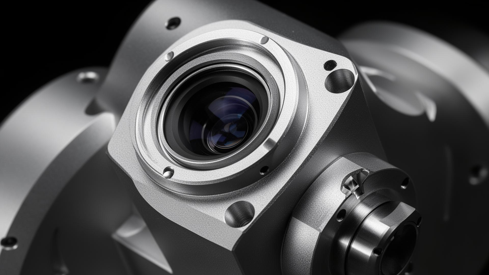

DeepTechDesign — Precision Instruments
Advanced Scientific Measurement Systems
Achieving precision in complex research environments. Engineered for scientists who demand uncompromising accuracy.

Core Technology
Engineered for Excellence
High-Resolution Imaging
Sub-nanometer optical resolution with multi-axis scanning capability for detailed surface characterization across diverse sample types.
AI-Powered Data Processing
Integrated machine learning algorithms automatically classify surface defects and generate comprehensive measurement reports in real time.
Modular System Architecture
Reconfigurable hardware modules allow seamless integration of additional sensors, stages, and imaging modes as research requirements evolve.
Key Features
Application Versatility

Materials Science Testing
Characterize surface roughness, thin-film thickness, and coating uniformity with sub-micron precision across a wide range of substrates.
Applications
Industry Solutions
Nanotechnology Research
Nanoscale surface profiling and thin-film metrology for advanced materials development.

Semiconductor Manufacturing
In-line wafer inspection and critical dimension measurement for process control.
Biomedical Diagnostics
Non-contact 3D imaging of implant surfaces and tissue engineering scaffolds.
Materials Science Laboratories
Surface roughness, wear analysis, and coating characterization across diverse substrates.
Performance Data
Technical Specifications
| Parameter | Value |
|---|---|
| Accuracy | ±1 µm |
| Resolution | 10 nm |
| Range | 0.1–500 µm |
| Scan Speed | 10 ms / scan |
| Repeatability | < 0.5 nm |
| Measurement Modes | PSI / VSI / HDR |

Precision Engineered
Ready to Advance Your Research?
Get a personalized quote from our application engineers.